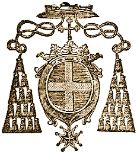

MONSEIGNEUR L'ARCHEVEQUE D'ALBY m'a fait l'honneur de me choisir pour faire l'Orgue de son Eglise Métropolitaine dont il est parlé dans ce mémoire. Le contrat a été passé par Mr. Jean Cayre, Notaire de mondit Seigneur l'Archevêque, le 20 Octobre 1724 au matin, le prix est de trente mille livres, Monseigneur l'Archevêque en donne vingt mille payables en quatre payemens ; & Messieurs les Chanoines de son Venerable Chapitre donnent le reste ; je prens en payement l'Orgue placée sur le Jubé qui est un huit pied, & l'ancienne qui est au fonds de l'Eglise construite d'une maniere extraordinaire à toutes les anciennes orgues que j'ay vû de mon tems. Je crois que cela fera plaisir d'en voir la description : Elle a quarante six pieds six pouces de large, sur trente cinq de hauteur, tous les gros tuyaux de la montre sont au nombre de douze sont posez sur le Jubé à rais de chaussée, chaque tuyau fait sa tourelle ; au milieu il y a une apparence de nîche qui renferme la figure de Ste. Cecile entourée de 24. tuyaux médiocres, & de chaque côté une tourrelle ornée de sept tuyaux chacune, deux autres tourelles sur les côtez où il y a trois tuyaux assez gros & courts ; au dessus de la nîche de Ste. Cecille il y a une grosse tourrelle à sept tuyaux, & quatre autres tourrelles à côté au dessus des quatre figures d'Anges.
Autre quatre au dessus de ces quatre d'en bas ; ensorte qu'il y a quatre tourelles en bas, & huit en haut, celles du haut ont chacune cinq tuyaux ; toutes ces tourelles sont presque en demi rond ; les douze gros tuyaux sont entre ces tourrelles, & les deux plus gros sont aux extrémitez des côtez, le plus gros de ces tuyaux à de longueur 24. pieds, il est un f ut fa, la grosseur en est de 20. pouces de diamettre, & par consequent de cinq pieds de circonférence ; je crois que c'est le plus gros qui ait parû en France.
Le sommier de pedale a 12. renures, & par consequent 12. soupapes de trois pouces de large & 8. de long ; il a 12. jeux : Le grand sommier est de 48. renures, il y a aussi 12. jeux, & a de longueur 13. pieds & de largeur 5. pieds quatre pouces ; tous ces jeux étoient trés gros ; car les trous où étoient posez les tuyaux sont d'une grosseur extraordinaire ; il n'y a plus aucun tuyau sur ces sommiers, celui de l'écho est de 26. renures, le grand sommier & celui du pedale n'a point de souspape, il y a une laye comme un coffre qui reçoit le vent des soufflets ; c'est là où sont les soupapes d'une grandeur & largeur extraordinaire ; ces sommiers sont sous les grands & ont des porte-vents d'un demi pied qui répondent d'une renure à l'autre ; il n'y à point de chape, chaque tuyau a une soupape, où un registre percé de trous carrez ouvre en tirant toutes les soupapes d'un jeu ; il y a une si grande quantité de porte- vents tous de bois qu'il ressemble à une forêt ; leurs mouvements & tout le reste de l'Orgue est tout different de celles qu'on fait â présent.
J'ai vû & défait des Orgues de deux cens cinquante ans en Lorraine, elle n'avoient aucune ressemblance à celle-cy qui est construite depuis environ deux cens vingt ans ; on la touchoit par derriere dans le corps de l'Orgue, parce qu'elle est posée dans le fonds de la Nef & contre la muraille : il y a une apparence de positif ou écho, son clavier & celui de la grande Orgue sont à quatre pieds de distance, il y a douze marches de pedales & onze soufflets mediocres : la sculpture & menuiserie sont d'un goût gothique, les tourelles & gros tuyaux sont couronez en forme de chapitaux & clairvoy, en tout à pointe à jour : les montant entre les tourelles & les gros tuyaux garnis au côté de Plates bandes à jour, il y a neuf figures qui sont un Ecce Homo, & les huit autres représentent les Vertus & placées au dessus des tuyaux, & plus une peinture qui saillit en rond en espece de corniche qui représente le Ciel, il y a aussi 4. figures d'Anges de 5. pieds six pouces de hauteur posées à ray de chaussée, deux qui ont des especes de trompetes, & les autres des hautsbois, & par un mouvement de fer, ils aprochoient leurs instrumens de la bouche quand on le veut : ces quatre figures d'Anges representent celles du Jugement universel ; car cette Orgue est posée sur deux tours qui font le quart de rond où est peint le Jugement dernier
Celle que je vais construire pour mettre à la place de cette ancienne devoit avoir, suivant le devis, plan dessein & traité que j'ai fait, quarante deux pieds de large & trente six d'hauteur, & sept tourelles à la grande Orgue, & cinq au positif, parce que ce dessein étoit fait il y a environ quinze ans, & que l'on avoit jugé à propos de suivre ; mais en demontant la vielle j'ai remarqué que l'emplacement merite une plus grande étenduë en largeur & en hauteur ; parce que j'ai fait abaisser les tours qui font le jubé de 7. pieds, les metant à niveau des galeries des côtez, c'est pourquoi j'éleve l'Orgue plus haut & lui donne plus de largeur, afin qu'elle cache deux petites tours qui sont sur les côtez que l'on verroit & qui feroient une trés-mauvaise figure ; je donne donc à cette nouvelle Orgue une forme beaucoup plus belle de beaucoup que le dessein fourni & signé, en lui donnant cinquante pieds de large & quarante-un & demi de hauteur depuis le ray de chaussée jusqu'au dessus de la corniche ; de plus la Couronne Royale qui sera au dessus de la corniche portée par des consoles aura encore cinq pieds six pouces, le tout quarente sept pieds de hauteurs à la plus grande tourelle : il y aura neuf tourelles & huit face-plates, la grande dans le milieu, les deux autres moyennes sur les côtez , quatres autres mediocres , sçavoir, une à côté de la grosse, & l'autre à côté de la moyenne, & une petite dans le milieu ; c'est pour un côté, l'autre de même simetrie, qui feront un trés-bel effet & s'accompagneront admirablement bien. Pour couronner toutes ces tourelles ; il y a sur la grande une Couronne Royale, sur les deux autres moyennes de grands paniers de fleurs, sur les deux médiocres qui accompagnent la grande deux figures, une de Ste. Cecile, tenant d'une main une petite Orgue avec des tuyaux détain, & une Palme de l'autre ; de l'autre de St. Valerien tenant aussi une Palme à la main ; sur les deux autres qui accompagnent les moyennes, une Renommée sur chacune avec des trompettes d'étain fin polies, qui seront mouvantes quand on voudra, sur les deux autres petites de grands vases remplis de fleurs ; il y aura tous les autres ornemens de sc ulpture, tant clair'voix que consoles, cul de lampe & feston, deux figures en Terme, supportant les deux moyennes tourelles en guise de cul de lampe, & deux grands cadres cintrez en oreilles sur les côtez, leur panneaux chargé de musique en barelief, & de chaque côté des pilastres en menuiserie, toutes les tourelles & face plate en general, seront avec des belles corniches, architraves & frises de l'ordre corinthien uni sans sculpture, & le tout vernissé. Le positif sera aussi augmenté en largeur & hauteur pour être proportionné à la grande Orgue ; il ne devoit avoir que 18. pieds de large ; les côtez en menuiserie, & cinq tourelles & quatre face plates. Je lui donne 24. pieds 4. pouces de large, cinq tourelles & six double faces plates, les deux plus grandes tourelles de 14. pieds de hauteur seront sur les côtez ; les deux moyennes en suivant en dedans, & l'autre plus petite dans le milieu, sur les deux côtés des grandes tourelles en dehors seront des faces plates double cintrées en oreille, en creus qui se termineront sur le Jubé, & en place des cotez qui devoint être en menuiserie ; les couronnemens de ces tourrelles seront premierement les armes de Monseigneur l'Archevéque, dans toutes leur étenduë seront posées dans la tourelle du milieu.
Sur les deux grandes, deux figures assises, une joüant du Basson, l'autre battant la Mesure, dont l'Organiste battant la mesure avec le pied fera mouvoir le bras comme un Me. de Musique, sur les deux moyennes tourrelles, il y aura deux autres figures, l'une joüant du Haubois & l'autre de la Flute Traversière ; toutes les figures seront en forme d'Anges, & seront mouvantes quand on le jugera à propos : comme les culs de lampe ; celui de la tourrelle du milieu representera les Armes de Messieurs du Venerable Chapitre de cette Eglise ; les deux autres des moyennes tourelles seront des têtes qui remueront la machoire comme si elle chantoint la musique ; ainsi toutes les figures representeront un corps de Musiciens & de Symphonistes en instrumens à vent ; comme l'Orgue imite ces instrumens & la voix même, par-là on voit combien il est contre le bon sens de mettre, comme ont fait certains Facteurs, des figures qui representent des Symphonistes joüant des Instrumens à corde : les deux culs de lampes des grosses tourelles seront à jour, les clairvoys, consolles & couronnemens en sculpture comme la grande Orgue ; ainsi toute la menuiserie & ornemens seront fait à la moderne & d'un bon goût, comme il se doit pratiquer pour une Orgue de cette consequence, qui sera la plus belle de France & peut-être d'Europe : à l'égard des jeux, voyez le devis cy-dessus, ce sera la même chose, à la reserve qu'il n'y aura qu'une montre de seize pieds tout au long & deux huit pieds, dont l'un servira au pedale separé, par raport que le buffet sera tout de suite, non deux grosses tourelles separées, comme il est marqué par le devis du Memoire : cette Orgue sera une des plus large & haute qu'on puisse voir par raport à l'emplacement trés large & trés haut de cette belle Eglise, qui a une nef aussi large & aussi hardie qu'il se puisse, elle a de large cinquate huit pieds, sans conter les Chapelles qui ont chacune quinze pieds de profondeur, le tout a de largeur quatre-vingt huit pieds dans œuvre lesd. Chapelles representent des collateraux ; elles sont voutées à hauteur de la moitiê de celle de la nef, au-dessus de ces Chapelles il y a une galerie en pierre, percée à jour qui fait un trés-bel effet, les vitres toutes peintes depuis les voutes des Chapelles jusqu'au haut de celle de la nef, même hauteur que la grande voute, lesdites Chapelles sont bien ornées, & au nombre de trente, en comptant celle de dessous la tour qui est des plus belle : la hauteur de la nef est de quatre-vingt-quinze-pieds sous clef , la longueur est deux cens soixante & seize pieds, sans compter les Chapelles qui sont au deux bouts, qui font encore une longueur ; sçavoir, la Chapelle de la Vierge de quinze pieds de profondeur qui est derriere le maître Autel, & celle de dessous la Tour de 31. pieds, le tout de sa longueur dans œuvre a trois cens vingt-deux pieds ; elle est peinte magnifiquement depuis le bas jusqu'en haut, les voutes sont toutes peintes en azur, mélées d'ornemens & figures représentant l'ancien & le nouveau Testament, les ornemens & figures sont toutes mélées d'or trés-beau & aussi les ogives & arc-doubleaux presque tout en or. Le chœur est magnifique, travaillé en pierre de taille blanche, le tout à jour, & du goût gothique, d'une delicatesse que l'on ne pourroit mieux faire en bois. Le siege de Monseigneur qui est au bout des stales proche l'Autel est couronné d'une piramide de pierre blanche, si artistement & delicatement travaillée avec plusieurs petites figures au tour que c'est un chef-d'œuvre. Le cœur a de longueur cent onze pieds & de large trente-deux, le tout dans œuvre : le Jubé est du même goût gothique, la largeur est de vingt deux pieds ; tout au tour du cœur & du Jubé en dehors & en dedans, il est orné de très belle figures d'un bon goût, & en dedans entre chaque stalle, un Cherubin & une petite Tour a jour, au dessus de chaqu'un, & sur chaque stalle il y a aussi une piramide à jour qui la couronne ; dans tous les ornements de sculpture du Cœur & du Jubé, il y a si grande quantité d'Ecussons chargez des Armes de Monseigneur d'Amboise Evêque d'Alby, qu'il est impossible de les compter.
Le Me Autel est très-beau, il y a 7. Colonnes de Cuivre sur lesqu'elles il y a six Anges qui portent les instrumens de la Passion du Sauveur, & la setiéme par suspente porte le saint Ciboire, & au tour une frise remplie de Chandeliers ; on y voit de très-belles figures d'argent dans le Rétable dudit Autel, représentant les Misteres de Jesus-Christ & plusieurs Chasses & Reliquaires d'argent, & sur tout une grande Croix d'or magnifique, enrichie de pierres pretieuses que le Chapitre porte dans ses Armes : on ouvre les volets de ce Thresor les grandes Fêtes, ce qui fait une décoration très rîche & belle.
La Tour qui est au bout de la Nef où l'orgue sera posée contre, & le soufflets dedans est assez belle & très haute fait de briques avec quatre galleries de distance en distance de pierre de taille a jour ; toute l'Eglise en dehors & en dedans & les voutes sont de Brique avec un ciment très fort, & d'une solidité aussi bonne que si c'étoit de pierre de taille ; on entre par les côtez & au milieu de l'Eglise ; il y a pour entrée d'un côté, un très bel édifice en pierre, dont le dessein est cy joint. On est ravi quand on voit cette Eglise, il n'y manque que l'Orgue que je va construire & l'y placer pour la rendre accomplie, ce que l'on doit au zele ardent que Monseigneur l'Archevêque a pour la gloire de Dieu, & la decoration de son Eglise.
Monseigneur l'Archevêque pria Monsieur de Poleins, Chanoine & Succenteur, Sindic du Clergé & du Chapitre de sa Metropolitaine, d'écrire à M. Goiffon Principal du College Royal de Toissey en Dombes, pour s'informer de ma capacité ; je met ici mot pour mot la réponse de M. Goiffon, sur laquelle Monseigneur l'Archevêque, & les Messieurs de son Chapitre, se sont déterminez a passer Contract avec moy.
M O N S I E U R ,
Au moment que j'ay eü fait lecture de vôtre Lettre en datte du 8. Juin adressée à mon frère Principal de nôtre College, je me suis chargé avec honneur & plaisir du soin d'y répondre, comme étant bien au fait de ce qui concerne l'Orgue que le sieur Moucherel a faite en notre Eglise. ( Nous l'y avons établie sans quitter l'usage de l'Eglise de Lyon, seulement pour soûtenir notre Chœur, dans les grandes Fêtes ausquelles les Officiant étant plus nombreux à l'Autel, les Chantres le sont moins. ) Cettes Orgue est un 4. pieds complet à 3. claviers & 20. Jeux ; il n'y a point de pedalles séparées, mais une Tirasse dont les Basses fournissent beaucoup, & un clavier séparé pour le Cornet de récit. Je ne pourroit que réiterer ici, Monsieur, ce que j'ay mis dans le Certificat écrit de ma main que nous avons donné à ce facteur : & j'ajoûterai de plus à son avantage que depuis un séjour de près de deux ans que je viens de faire à Paris, je reconnois que l'ouvrage qu'il nous a fait est excellent & bien conditionné de tout point. J'en ay fait voir le devis, & en ai fait même verbalement la description exacte aux plus habilles Maîtres tant Facteurs qu'Organistes de Paris, lesquels en ont paru conten sur mon récit. Mais tout cela ne m'auroit point satisfait, si les oreilles pleines des sons de ces Instrumens qui abondent en cette Ville, je n'euße avec plus de connoissance examiné ceux de notre Orgue, lesquels m'ont levé tous les scrupules que je pouvois avoir à ce sujet : Au reste, la Menuiserie la sculpture & tout ce qui en compose l'ornement, y est conduit avec art, justeße & solidité ; & l'habilité avec laquelle ledit Moucherel a exécuté ce petit ouvrage sous nos yeux dans l'espace de moins d'un an, nous est une preuve de sa suffisanc à un plus concidérable tel que celui que vous projetés. Les Plans, Desseins & Certificats de plusieurs huit pieds qu'il nous a produit dûement signez, sont un surcroit de témoignage en sa faveur. Je crois encore devoir rendre cette justice audit Moucherel, que son assiduité, sa promptitude, & son activité dans ses entreprises, jointes à son adresse, lui facilitent le moyen d'accepter des prix-faits au plus juste prix qu'il se puisse : Voilà Monsieur un temoignage que l'équité & l'experience m'ont dicté. Il est heuraux pour moi qu'il me procure l'occasion de vous être de quelque utilité, & plus heureux pour ledit Moucherel si mon suffrage ne lui est pas inutile. Il n'avoit garde de connoître vôtre nom, parce que dans le tems qu'il travaillois chez nous personne de votre famille paroissoit à Toissey ; mais actuellement Monsieur votre frere de l'Oratoire nous honore de tems en tems de ses visites en venant voir Monsieur votre neveu qu'il nous a confié, & que j'enseigne en Rethorique cette année, lequel a l'honneur de vous présenter ses respects trés humbles dans la lettre cy-jointe. On ne peut être plus respectueusement que je suis,
MO N S I E U R ,
A Thoissey ce 23. Juillet 1734 |
Vôtre très-humble & très-obeissant serviteur. G O I F F O N Le Cadet. |
Quelque sort que puisse avoir mon témoignage en faveur du sieur Moucherel ; vous m'obligeriez sensiblement Monsieur, de m'informer à qui sera échû votre prix fait.